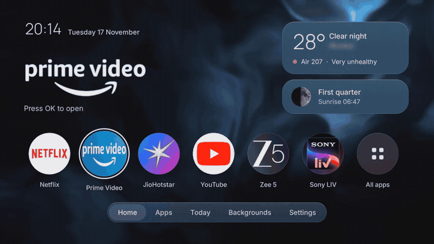
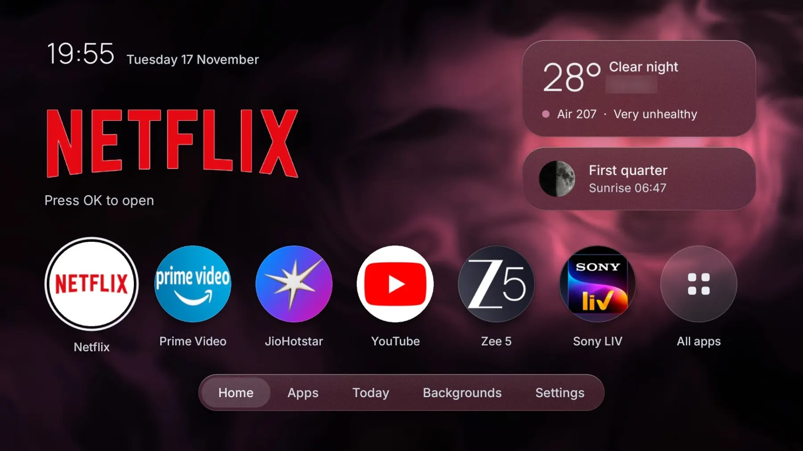
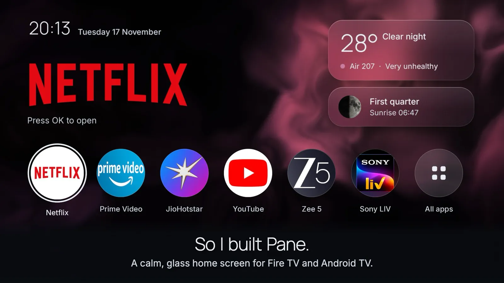
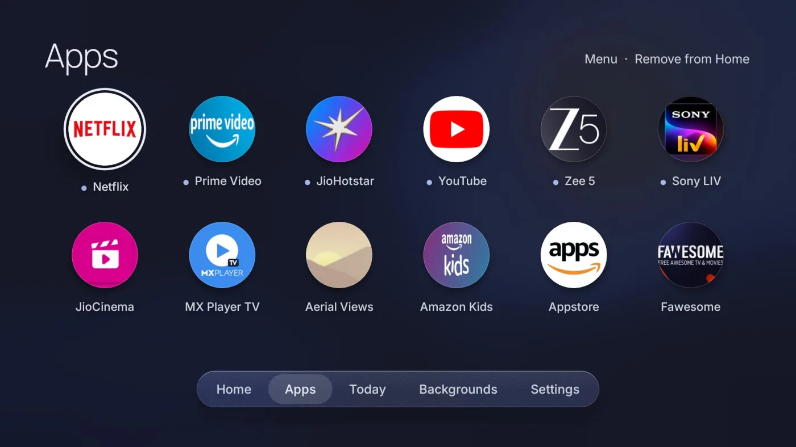
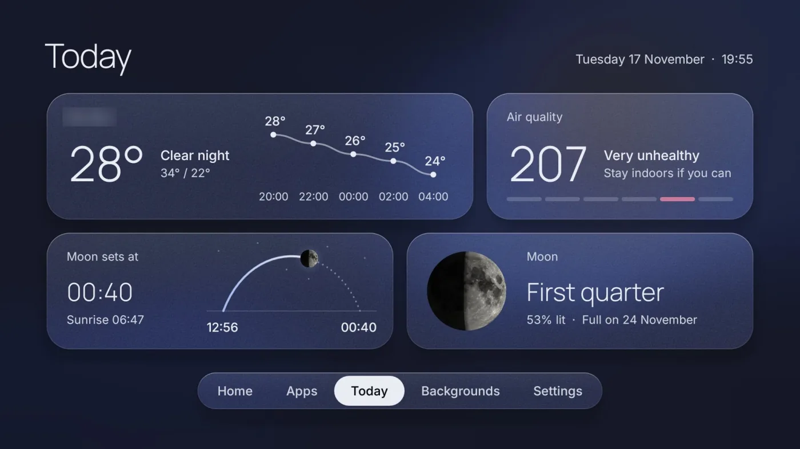
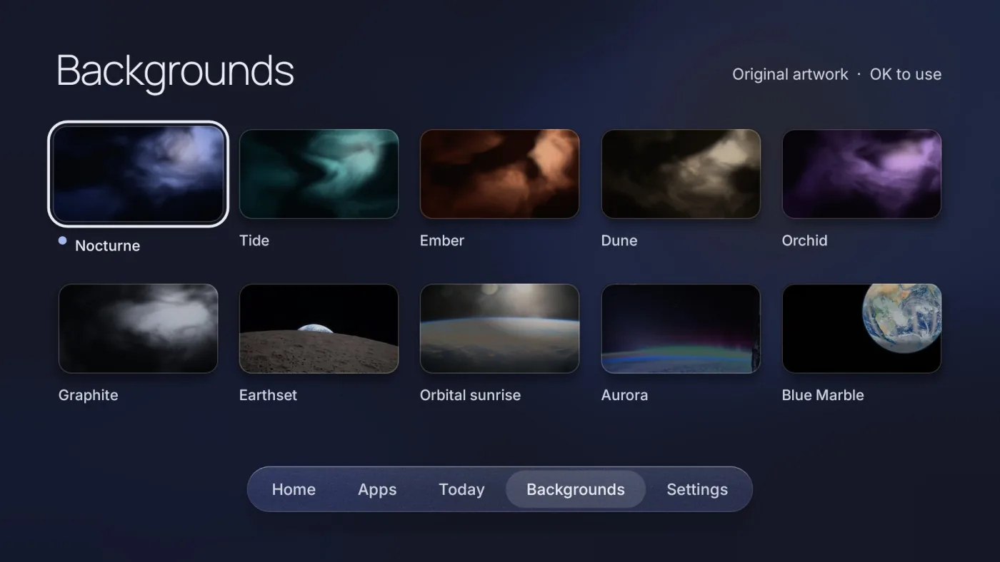

A home that's alive.
Volumetric smoke drifts behind frosted glass. Move to another app and its colour spreads through the smoke like dye in water.

A free, open-source home screen for Amazon Fire TV and Android TV. No ads, no accounts, no tracking.

A 44-second launch film, made from Pane running on a 2018 Fire TV Stick 4K. The smoke is Pane's own shader.

Watch the film on GitHubVolumetric smoke drifts behind frosted glass. Move to another app and its colour spreads through the smoke like dye in water.

Round icons for the apps you use, and every app one page away. Newly installed apps join by themselves, and there are no sponsored rows, ever. Pin or unpin with the menu button. Nothing is hidden behind gestures.

Live weather and air quality for your city, sunrise and sunset, and the moon at tonight's phase, travelling its actual path across the night sky.

Six living smoke fields that drift and take on your app's colour, or NASA photographs of Earth from orbit, all behind real frosted glass.

Pane never hides the system. Display, sound and remotes are always reachable, in one tap from Pane's own settings.

There is also an ambient mode that turns the screen into a slow window when nobody's watching, small spring-based motion everywhere you look, and a reduced-motion setting if you prefer it still.
Amazon doesn't let other apps replace the Fire TV home screen, so Pane needs a one-time setup from a computer on the same Wi-Fi. It takes about two minutes.
On the TV, go to Settings → My Fire TV → Developer options → ADB debugging → On. No Developer options? Go to Settings → My Fire TV → About and press OK on your device name seven times.
Go to Settings → My Fire TV → About → Network.
On your computer, run the command for your system, with your TV's address in place of the example.
macOS and Linux
curl -fsSL https://raw.githubusercontent.com/Arya-A-Nair/pane-tv/main/install/pane-install.sh | bash -s -- 192.168.1.20Windows (PowerShell)
iwr https://raw.githubusercontent.com/Arya-A-Nair/pane-tv/main/install/pane-install.ps1 -OutFile pane-install.ps1; ./pane-install.ps1 192.168.1.20A prompt appears on the TV: choose Always allow from this computer, then OK. Press Home on your remote and Pane appears. Amazon briefly holds the Home button for a few seconds before Pane takes over; Pane shows a calm screen instead of Amazon's ads while it waits.
The installer downloads the latest signed release, checks its checksum, installs it, and grants the two permissions Pane needs. It's safe to run again to update.
Download pane.apk and install it, for example with the Downloader app or Send Files to TV. Then press Home and choose Pane as your home app.
Run adb uninstall tv.pane and your TV goes straight back to its original home screen. Pane never changes system files.
Needs Fire OS 6 or newer, or Android 5.1 or newer on Android TV and Google TV. Tested on a Fire TV Stick 4K (2018); tell us how it goes on yours.
Pane has no accounts, no analytics and no ads. The only network requests are for the weather: your approximate location comes from your public IP address (ip-api.com), and the weather and air quality for that location come from Open-Meteo.
Pane is MIT licensed. The home screen is a plain-Java Android app with no third-party libraries, small enough to run smoothly on a 2018 Fire TV Stick. Read the code, build it yourself, or report what's broken.